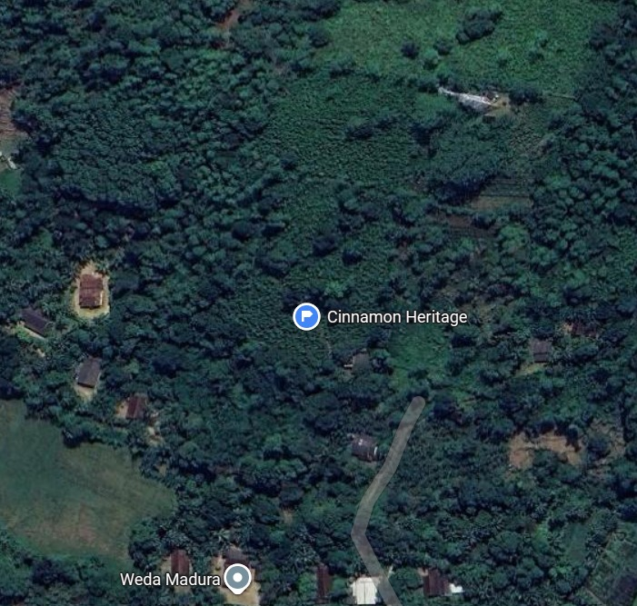
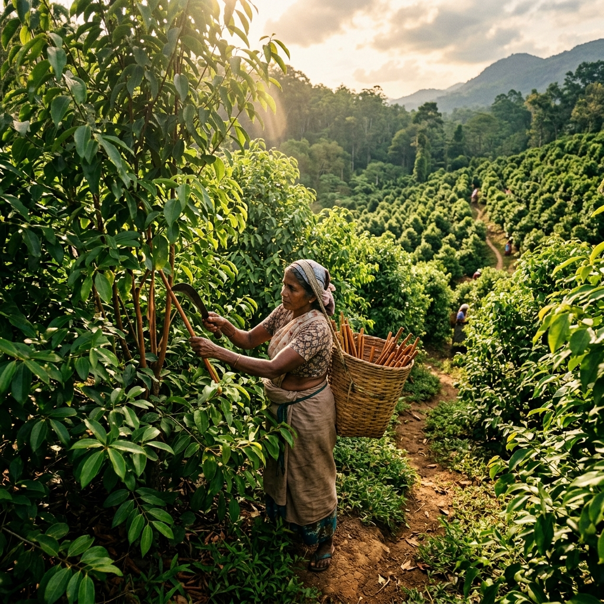

Premium Ceylon Cinnamon Quills C5 Grade
Finest hand-rolled Ceylon Cinnamon Quills. Delicate layers, smooth texture, sweet aroma.
LKR 3,500 LKR 3,700 In stock
Galle Unanwitiya, Sri Lanka
+94 77 123 4567 · info@cinnamonheritage.lk
Since 1982 Family estate · Galle Unanwitiya
Hand crafted, sustainably grown and certified authentic Ceylon cinnamon from our family estates in Galle Unanwitiya, Sri Lanka — the heart of the world’s cinnamon country.
Delicate multi-layered bark, rolled by our artisans exactly as it has been for generations.

Nestled in the lush hillsides of Galle Unanwitiya, our family-owned estate lies on the southern coast of Sri Lanka — known globally as “Cinnamon Country”. The tropical climate, rich laterite soils and monsoon rains give Ceylon cinnamon its world-renowned delicate flavour and aroma.
Three generations of our family have nurtured these lands using sustainable, organic farming methods passed down through the decades. Every quill that leaves our facility carries that inheritance.
Peeling, rubbing and quill-making done by skilled artisans using centuries-old Sri Lankan techniques.
Organic farming methods and zero-waste processing — leaves and chips become our essential oils.
Stainless-steel workstations and calibrated mechanical dryers, held to ISO 22000 and HACCP standards.
Most “cinnamon” sold worldwide is cassia. Ceylon cinnamon — Cinnamomum verum — is the true cinnamon native to Sri Lanka, and the difference is visible, tasteable and measurable.
Cinnamomum verum — native to Sri Lanka
Coumarin is a natural compound that can be harmful in large doses. The gap between the two barks is not marketing — it is laboratory data.
Bars are scaled relative to cassia’s upper limit. Ceylon’s trace level is why it is considered the premium, health-safe choice for everyday use.
Every batch is laboratory-tested for purity, moisture and coumarin. These are our published specifications and certifications — not estimates.
Figures from Cinnamon Heritage’s published product specifications, export grading and certification records.
Nine product lines and a full B2B programme — every one sourced, processed and packed on our own estate.
Finest hand-rolled Ceylon Cinnamon Quills. Delicate layers, smooth texture, sweet aroma.

Precision-cut quills and sticks in various grades. Ideal for retail and food service.

100% Pure micro-ground Ceylon Cinnamon Powder. Rich aroma, smooth texture.

Premium cinnamon by-products. Excellent for oil extraction, tea blends and cooking.

Finely cut cinnamon pieces designed for perfect brewing. Pure and aromatic.

Steam-distilled pure leaf oil. High eugenol content for aromatherapy and wellness.

Rare bark oil with high cinnamaldehyde content. The gold standard in essential oils.

Curated cinnamon-based herbal tea blends and innovative beverage solutions.

Luxury curated gift box featuring premium cinnamon products. Perfect for gifting.
Partner with us for bulk orders, private labelling and bespoke product development.
Prices in LKR. Live stock, delivery rates by district and secure checkout are handled in our store.
From dawn harvest to climate-controlled storage, follow the journey every quill makes through our facility. Select a stage to see it.

01Mature stems are carefully harvested at dawn to ensure the highest concentration of bark essential oils.
Use the arrow keys while a stage is focused, or step through with the buttons.
We provide authentic Ceylon Cinnamon solutions for global businesses, supporting industries with premium products, reliable supply and customized services from our family estate in Galle, Sri Lanka.
Export-quality cinnamon supply with consistent quality and reliable sourcing — all grades, quills, powder, chips and oils in volume.
Create your own branded cinnamon products with our manufacturing and packaging support. Shelf-ready under your name.
Work with our team from concept to finished product — new formats, blends and cinnamon-based lines for your market.
Tailored quills, powder, chips and essential oils based on your requirements, with full documentation per batch.
Tell us your volumes, grades and packaging needs. Our B2B team responds within 2–3 business days with samples, COAs and a custom quote.
Steam-distilled on our estate from leaves and inner bark, GC/MS tested, and available in 10ml, 50ml, 100ml and bulk quantities.
Steam-distilled from fresh Ceylon Cinnamon leaves. Warm, spicy-clove aroma with subtle green herbal undertones — ideal for aromatherapy, skincare and wellness.
Essential oils are for professional use only and must not be consumed directly. Request samples and technical documentation before formulation.
Step into our family estate in Galle and experience the authentic journey of Ceylon Cinnamon — from plantation to finished product.
Walk the plantation with expert commentary on cultivation and the land that shapes the flavour.
Watch skilled artisans harvest and peel cinnamon using centuries-old techniques.
Try peeling and quill-making yourself, guided by our master artisans.
Taste premium grades, infusions and the full product range, fresh from the facility.
Sri Lankan spice and food experiences that put Ceylon cinnamon in its culinary context.
Structured visits for students and groups covering botany, grading and processing.
Facility tours for buyers and partners — see the supply chain before you commit.
A nature-inspired stay within our working estate, connecting guests with local tradition.
In developmentVisits are arranged in advance so we can prepare a guided tour and tasting session for your group.
Order online like any modern store, or run a structured export programme. Both paths are handled by the same estate team.
Explore quills, powder, tea cut, oils and gift collections with live stock.
Sign in and build your cart; quantities and stock update in real time.
Delivery rates calculated by district, with your order summary before you pay.
Cash on delivery or bank transfer — whichever suits you.
Vacuum-sealed, food-grade packaging from our climate-controlled warehouse.
Follow every status change from confirmation to delivery in your account.
Tell us grades, volumes, packaging and destination market.
Our B2B team replies with options and next steps.
Evaluate samples with certificates of analysis and GC-MS reports.
CIF / FOB pricing tailored to your volumes and incoterms.
Batch processing under ISO 22000 and HACCP with full traceability.
Food-grade, humidity-controlled containers; we handle customs documentation.
No middlemen. You buy from the family that grows, peels, grades and packs the cinnamon.
True Ceylon cinnamon at trace coumarin levels — the safe choice for daily use.
Purity, moisture, volatile oil, ash, coumarin and microbiological results on every COA.
Leaves and chips become essential oils; nothing from the harvest is wasted.
Batch-level traceability from estate row to export container.
Documentation, humidity-controlled packing and CIF/FOB pricing for worldwide markets.
Cinnamon Heritage is more than a brochure. The website is a complete digital business platform — storefront, checkout, inventory, orders, content management and analytics running together on one cloud database.
A filterable product grid with live stock, discounts, quick view and add-to-cart or buy-now, driven by real-time catalogue data.
Cash on delivery, bank transfer with reference upload, and card / online pay — each switchable by admin. District delivery rates recalculate instantly.
A dual-tab cart drawer with a live six-stage tracking stepper and an active-order pulse, updating the moment the team changes a status.
Every order runs inside a Firestore ACID transaction that validates and deducts stock atomically, then clears the cart automatically.
Earnings today, this month, this year and lifetime; order status counts, date-range filters, a top-product table and Chart.js revenue and payment breakdowns.
Hero, about, factory, process steps, products, essential oils, FAQs and delivery rates are edited from the admin panel — no code changes needed.
Wholesale, export, factory-tour and eco-villa enquiries are captured with certificate selection and automated email notifications to the team.
Firebase email and Google authentication with customer and admin roles. New admin accounts stay pending until a super admin approves them.
Product and site imagery is stored and served through Cloudinary’s CDN, with upload presets and progress-tracked uploads.
The full platform is published at cinnamonheritage.lk — storefront, checkout and admin portal included.
Three applications share one estate and one database. Open any panel below to see exactly what lives inside it.
A single scrolling experience that tells the estate story and sells the harvest — with a cart, live orders and account access built into the same page.
One checkout handles both a whole cart and a direct single-item purchase, detects the mode automatically, and finishes with an atomic, stock-safe order.
Rates are stored per district and province and applied instantly at checkout, so the total you see is the total you pay.
The control room for the whole business — orders, content, products, payments and people — protected by an approval-based admin role.
Requires an approved admin account.
About Ceylon cinnamon, our certifications, bulk supply and estate visits. Can’t find yours? Message us directly.
Ceylon Cinnamon (Cinnamomum verum) is the “true cinnamon” native to Sri Lanka. It is distinguished by its delicate, multi-layered quills, light tan colour, subtle sweet flavour, and ultra-low coumarin content — making it the safest and most premium variety for daily culinary and wellness use.
Ceylon Cinnamon has thin, multi-layered bark, a mild sweet taste, and contains only trace amounts of coumarin (0.004%). Cassia has a single thick bark layer, a stronger spicy taste, and significantly higher coumarin levels (up to 1%), which can be harmful in large doses. Ceylon is considered the premium, health-safe choice.
Yes. We offer comprehensive bulk supply for wholesalers, distributors, food manufacturers and hospitality businesses. Our minimum order quantities are flexible, and we provide competitive pricing for large volumes across all product lines — quills, powder, chips, tea cut, and essential oils.
Cinnamon Leaf Oil is steam-distilled from fresh Ceylon Cinnamon leaves. It is rich in eugenol (70–85%) and is widely used in aromatherapy, natural skincare, massage therapy, and as a natural antiseptic. It has a warm, spicy-clove aroma.
Cinnamon Bark Oil is steam-distilled from the inner bark of the Ceylon Cinnamon tree. It contains 60–75% cinnamaldehyde, making it one of the most potent essential oils available. Used in premium perfumery, pharmaceutical applications, and high-end wellness products.
Yes. We provide full private label and white label packaging services. You supply your branding and we handle everything from sourcing and processing to packaging and labelling, delivering shelf-ready products under your brand name.
Absolutely. Every batch we produce is accompanied by a Certificate of Analysis from accredited laboratories. Our COAs include moisture content, volatile oil content, ash levels, coumarin levels, and microbiological test results.
Cinnamon Heritage holds ISO 22000 (Food Safety Management), HACCP (Hazard Analysis Critical Control Points), and Sri Lanka Standards Institution (SLSI) certifications. Our products are 100% natural with no additives or preservatives.
Yes! We welcome visits to our cinnamon estate and processing facility in Galle, Sri Lanka. Experience the entire cinnamon journey from plantation to product. Please contact us in advance to arrange a guided tour and tasting session.
Yes, we export to markets worldwide including Europe, North America, the Middle East, and East Asia. All shipments are professionally packed in food-grade, humidity-controlled containers. We handle customs documentation and provide CIF/FOB pricing.
No questions match your search. Try a different word, or contact us.
Whether you’re a wholesaler, retailer or artisan brand looking for authentic Ceylon cinnamon, we’d love to hear from you. Reach out to discuss bulk orders, private labelling or any enquiries about our products.
Pick a topic and add a note — we’ll compose the message for you. Nothing is sent until you open WhatsApp.
Order online today, or start a partnership that puts your brand on cinnamon grown, crafted and certified on one family estate.
Live stock, district delivery rates and secure payment are handled in the Cinnamon Heritage store.
Sign in to shop, track orders and manage your partnerships.
Accounts are shared with the Cinnamon Heritage store. Admin accounts require approval.